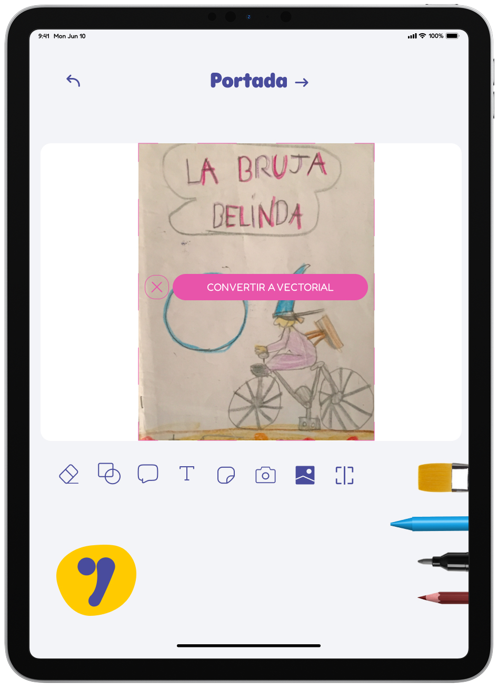

Buky Tales
This Final Degree Project covered the creation of a digital application, a brand identity, creative workshops, and different communication strategies designed to foster children’s creativity through storytelling. The main outcome was a tablet app prototyped in Figma, where children aged 3 to 13 can combine drawing and writing, both manually and digitally, in collaboration with their parents or caregivers.
Although the project addressed many areas, this presentation focuses specifically on the advertising campaign in print media, developed to give Buky Tales visibility in urban spaces and create playful, participatory experiences for families.
Briefing
The advertising campaign for Buky Tales was designed for urban print media, using formats such as billboards, bus shelters, digital screens, banners, and urban panels. The goal was to capture attention in public spaces, connect with families, and strengthen the brand’s presence through playful and recognizable visuals. Two creative lines were developed, both focused on sparking curiosity and participation without directly promoting app downloads, while redirecting audiences to Buky Tales’ social media for updates and activities.
Line 1 – Creative Workshops
The first line of posters promoted creative workshops organized by Buky Tales. Flyers included essential information (date, time, and location) along with a QR code for registration. They were produced in two formats: A3 posters displayed in partner venues, and B5 handouts distributed directly by the staff in strategic areas, providing a simple way to reach families and reinforce the brand’s educational positioning.


Line 2 – Participatory Posters
The second line of posters proposed a participatory experience, inviting children to draw and write directly on the poster, turning blank areas into creative canvases. Participants were encouraged to share their works on social media to enter a contest for a visit to the Pixar studio. This action combined large urban installations with smaller take-home versions, ensuring both public engagement and personal interaction with the brand.